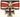

De: La Frikipedia, la enciclopedia extremadamente seria.
De: La Frikipedia, la enciclopedia extremadamente seria. De: La Frikipedia, la enciclopedia extremadamente seria.

|
FRIKIPEDIA QUIERE QUE ESTA DEFINICIÓN
PASE A SER UN ARTÍCULO FRIKIPÉDICO La información contenida en este artículo es una mínima parte de su jugo total, así que ponte los guantes, saca el tupperwere y empieza a exprimir el tema. Si lo haces serás recompensado con una galleta en almíbar y algo más. |
| De la serie conflictos armados: | ||||
| Batalla de Xinguang | ||||
| ||||
| Lugar y fecha | Xinguang, 2018 | |||
|---|---|---|---|---|
| Bandos | Los imperiales de Franz | | ||
| Fuerzas | 3.400.000 gundams alemanes, 2.300 del destacamento romano | 280.000 atrincherados | ||
| Comandantes | Franz y el duque de Caixas | Xing ke y consejo de inútiles | ||
| Armas | Gundams | antiaéreos y Máquinas de guerra | ||
| Bajas | ninguno | totales | ||
| Resultado | Victoria de Franz y caída de toda china. avance hacia el frente mongol | |||
Era un día frío y hace como tres horas que Franz les declaró la guerra aquellos que se autollamaban guardianes de la justicia. Su primer intento era masacrar e inmolar toda la federación China pero primero tenía que vencer a todos los chinos que estaban refugiados en una montaña que arruinaba sus sueños.
Franz, pionero en la estrategia pirrónica, decidió mandar a todos sus Gundams al mote para aniquilar a esas minucias. Los chinos mandaron el grueso para al menos detenerlos con sus escombros pero no fue así. Xing ke moriría atravesado por la espada de Franz pero los historiadores pusieron tuberculosis en su memoria. El monte estaba cediendo mientras los gundams los bombardeaban con artillería pesada. El negro Mohamed se rinde con treinta mil arabes rebeldes, Franz ordena su fusilamiento por traidores.
Franz obtiene una aplastante victoria contra sus eternos enemigos, toda china meridional pasa al imperio. Sus tropas avanzan hacia el frente siberiano para reprender a la U.E y en especial a la orden de los caballeros negros teutonicos. Franz se toma un barril de Kalimotxo para celebrar y el sargento Miller es ascendido a Coronel por su labor patriótico. La batalla de hoy duro 3 días !Dessu¡
| |
|---|
|
|
Autor(es):